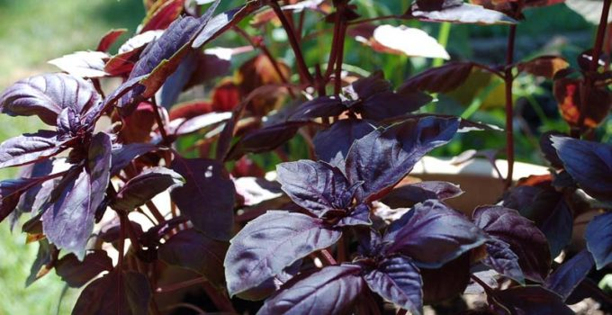
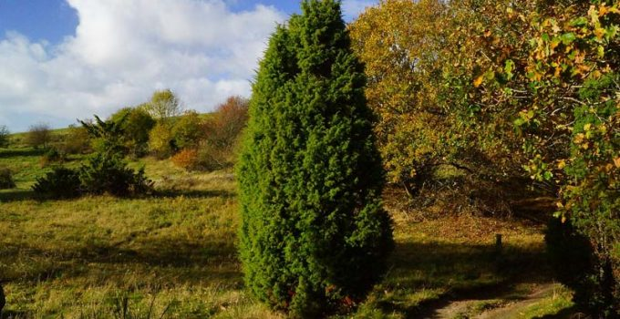

Albahaca morada. Más intensa, algo picante y más resistente
Vamos a variar un poco el huerto aromático con una variedad de albahaca morada que

Cultivo del enebro y propiedades (Juniperus communis)
El enebro es un árbol muy apreciado como ornamental. Además, su aromático fruto tiene buenísimas
Casas bioclimáticas: ventajas y desventajas
La arquitectura sostenible poco a poco va haciéndose hueco en gran cantidad de países que